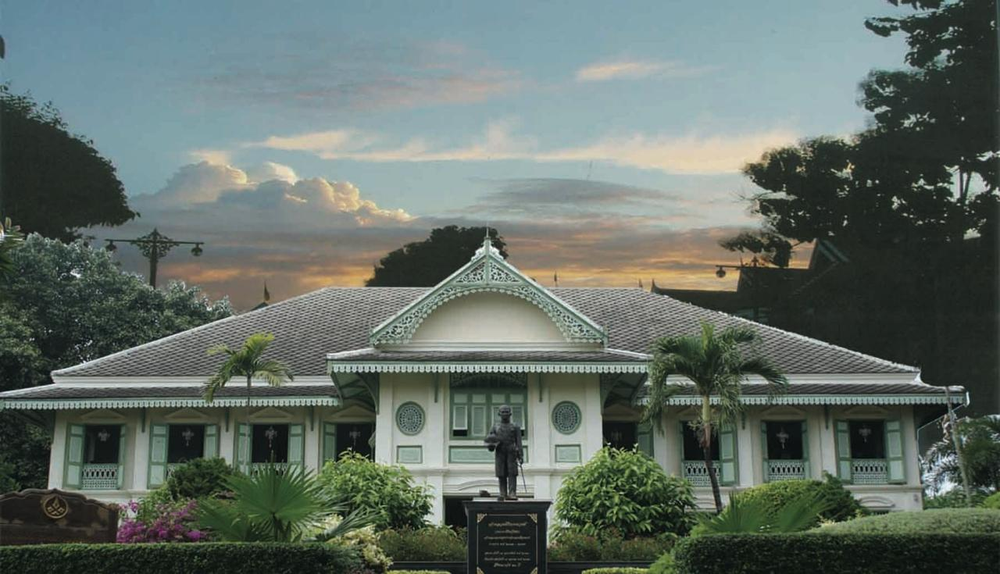
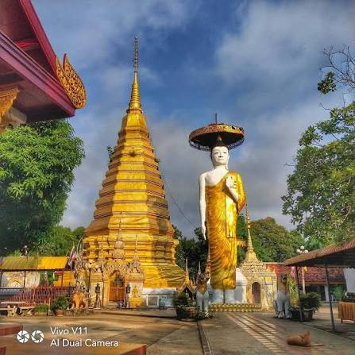

หม้อห้อมไม้สัก ถิ่นรักพระลอ ช่อแฮศรีเมือง ลือเลื่องแพะเมืองผี คนแพร่นี้ใจงาม
จังหวัดแพร่เป็นเมืองรองเก่าแก่ในภาคเหนือที่มีเสน่ห์เงียบสงบ เต็มไปด้วยวัฒนธรรมล้านนา สถาปัตยกรรมไม้สักโบราณ และธรรมชาติที่สวยงาม
เว็บไซต์นี้รวบรวมสถานที่ท่องเที่ยวสำคัญ 5 แห่ง เพื่อให้ผู้ที่สนใจได้ศึกษาข้อมูล และวางแผนการเดินทางท่องเที่ยวจังหวัดแพร่
พระอารามหลวงศักดิ์สิทธิ์คู่บ้านคู่เมืองแพร่ บรรจุพระบรมสารีริกธาตุ และเป็นพระธาตุประจำปีเกิดปีขาล (ปีเสือ)
อ่านรายละเอียดประติมากรรมทางธรณีวิทยาที่เกิดจากน้ำและลมกัดเซาะดินทรายมานานหลายพันปีจนกลายเป็นหน้าผาและเสาดินรูปทรงแปลกตา
อ่านรายละเอียด
สถาปัตยกรรมไม้สักโบราณสไตล์เรือนขนมปังขิงสมัยรัชกาลที่ 5 อดีตจวนที่ประทับของเจ้าเมืองแพร่องค์สุดท้าย
อ่านรายละเอียด
เป็นวัดเก่าแก่คู่บ้านคู่เมืองแพร่ ตั้งอยู่ที่ตำบลช่อแฮ อำเภอเมืองแพร่ จังหวัดแพร่ สร้างขึ้นตั้งแต่ปี พ.ศ. 1331
อ่านรายละเอียดตั้งอยู่ที่ตำบลทุ่งโฮ้ง อำเภอเมืองแพร่ จังหวัดแพร่ เป็นแหล่งเรียนรู้ภูมิปัญญาผ้ามัดย้อมและผ้าหม้อห้อมพื้นบ้านชื่อดังของจังหวัด
อ่านรายละเอียด